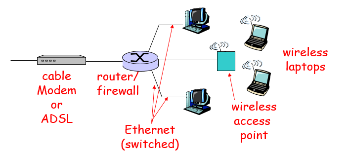

Chapter 1 : Introduction
Page 1-2 Roadmap
Protocol :
Edge :
- 網路的邊邊 : PC , Phone, Sever
Core :
Router
- 如何接到網路 => 有線、無線
- 連線的材料 => 銅、光纖、電磁波
ISP structure :
- ISP(網際網路服務供應商)
- 網路是由階層式的方式連接，介紹連接的方法
- 網路封包loss、delay，如何控制loss & delay
Protocol layers , service models :
Page 1-4 What’s the Internet: "nuts and bolts" view
Millions of connected computing devices :
- hosts = end-systems (PC, phone , sever)
- running network apps
Communication links :
- fiber, copper, radio, satellite
- transmission rate = bandwidth (頻寬)
Routers :
Protocols :
- 網路通訊協定 : TCP , IP , HTTP , FTP , PPP
Internet = "network of networks" :
- loosely hierarchical 階層式
- NAT : a area have a public IP that connect to multiple private IP in this area
Internet standards :
Page 1-6 What’s the Internet: a "service" view
Communication Infrastructure
- 分散式設備應用 : Web, email, games, e-commerce, database., voting, file (MP3) sharing
- 服務 :
- connectionless : 無須建連線 (UTP) => don't care loss , delay
- connection=oriented : 要先建連線 (TCP) => 減少loss , delay
Page 1-7 What’s a protocol?
Network protocols :
- Define : format , order , response actions(遵循一定格式、順序、回應方法)
- Example :
- PC -> TCP connection(req) -> Server
- PC <- TCP connection(res) <- Server
- PC -> Get 'http://www.abc.com/pic.PNG'(req) -> Server
- PC <- File(res) <- Server
Page 1-10 Network edge
End systems (hosts):
- run application : web , email (at edge of network)
Client/Sever modol :
- client host requests and receives response from alway-on sever
Peer-2-Peer moudole :
- client to client (no sever)
Page 1-12 Connection-oriented service
Goal : data transfer between end systems
TCP service (Transmission Control Protocol)
- handshaking(建連線) : call and setup (prepare for) data transfer ahead of time
- reliable , in ordered byte stream data transfer
- loss: acknowledgements and retransmissions(確認收到不然重新傳送)
- flow control (流量控制)
- sender won’t overwhelm receiver
- congestion control (網路擁擠控制)
- senders “slow down sending rate” when network congested(掉封包時)
Page 1-13 Connectionless service
Goal : data transfer between end systems
UDP (User Datagram Protocol) connectionless service
- unreliable data transfer (可能掉封包)
- no flow control (沒有流量控制)
- no congestion control (沒有網路擁擠控制)
Page 1-12 & 1-13 Summary
App using TCP (send important file):
HTTP(web) , FTP(file transfer) , Telnet(remote login) , SMTP(email)
App using UDP (don't care loss):
Streaming media(music, video) , DNS , telephony(skype)
Page 1-15 Network Core
Mesh of interconnected routers
- every router have more than one connect to other router
The fundamental question : how is data transferred through net?
Circuit Switching (沒有競爭) :
- End-end resources reserved for “call” (路徑保留專屬資源)
- link bandwidth, switch capacity (保留頻寬，router 承載量)
- dedicated resources: no sharing (保留的資源不分享給其他連線)
- call setup required (要事先預約)
- network resources (e.g.. bandwidth) divided into "pieces"(資源切片)
- pieces allocated to calls (切片根據需求分配)
- resource piece idle if not used by owning call (專屬切片no sharing)
- divide by frequency division or time division
- FDMA (frequency division)
- TDMA (time division)
Packet-switching (互相競爭) :
- Each end-end data stream divided into packets (傳送的資料切割成封包)
- user A, B packets share network resources (沒有保留資源)
- each packet uses full link bandwidth (用全部頻寬)
- Resource contention (誰搶到資源就誰用) :
- aggregate resource demand can exceed amount available (傳送需求大於通道供給)
- congestion: packets queue, wait for link use (網路擁擠 , 存到buffer等到link有位子)
- store and forward: packets move one hop at a time(封包排隊等link有空位)
- statistical multiplexing (統計多重化) :
- Message Segmenting (封包切割) :
- Path selection algorithms(shorter path) :
- select less router , more bandwidth .....
- Datagram network : (封包走不固定路線)
- every packet have destination address (封包目的地)
- router may change during session (邊傳邊看怎走)
- virtual circuit network (封包走固定路線):
- fixed path determined at call setup time (call一次來確認路徑怎走)
- routers maintain per-call state (router維護每個call的tag路徑)
- each packet carries tag (virtual circuit ID)，router 根據tag分配路徑
Curcuit switching V.S Packet switching :
- For 1 Mbps link & each user : 100 kbps when active , active 10% of time :
- circuit switching : 10 users
- packet switching : 35 users (probability > 10 users active at same time less than 0.0004)
- When to use circuit and packet :
- Packet-switching : Great for bursty data (爆發性資料) use resource sharing , no call setup
- Circuit-switching : Great for important file transfer, (TCP協定避免過於擁擠時會掉封包)

Page 1-28 Access networks
How to connect end systems to edge router?
- Residential access nets (一般民用)
- Dialup via modem(數據機、電話線撥接) :
Slow , can't be always on;
- ADSL (asymmetric digital subscriber line) :
- 上傳和下載速度不一樣
- Use FDM (frequency divide)
- HFC: hybrid fiber coaxial cable(銅軸電纜、光纖)
- Asymmetric(上傳和下載速度不一樣)
- network of cable and fiber attaches homes to ISP router
- shared access to router among home
- issues: congestion, dimensioning
- Company access : Local area networks (LAN)
- shared or dedicated(專用) link connects end system and router
- Deployment(部署) : institutions(機構), home(家), company (公司)
- Wireless access networks
- End systems connect to routers via base station
- base station(基地台) also known as “access point”
- Home networks (Typical home network components):
- Lv1. Router
- Lv2. ADSL or cable modem (public IP)
- Lv3. small router(private IP) , include : firewall , NAT
- Lv4. Ethernet
- Lv5. wireless access point(路由器)

Page 1-39 Physical Media
Bit :
Physical link :
- Guided media(實體材料): Copper, Fiber, Coax
- Twisted Pair(TP) 雙絞線

- Coaxial cable(銅軸電纜)
- bidirectional(雙向)
- baseband (single channel) , broadband (multiple channels)

- Fiber optic cable:
- glass fiber carrying light pulses, each pulse a bit
- high-speed
- low error rate(不被電磁波干擾)
- repeater (訊號放大器，延長訊號傳遞)

- Unguided media(非實體材料) : Radio
- signal carried in electromagnetic spectrum(電磁波)
- no physical “wire”
- bidirectional
- propagation environment effects:
- reflection (訊號反射)
- obstruction by objects (訊號被阻擋)
- interference (訊號干擾)
- Terrestrial microwave (微波)
- e.g. up to 45 Mbps channels
- LAN (Wifi .. )
- 2Mbps, 11Mbps, 54Mbps, 108 Mbps
- Wide-area (cellular 蜂窩狀)
- 手機4G , 5G : hundreds of kbps
- Satellite
- up to 50Mbps channel (or multiple smaller channels)
- 270 msec end-end delay(延遲長)
- geosynchronous versus low-earth-orbit satellites (LEOS低軌衛星)
Page 1-50 Packet Delay
Processing delay
- check bit errors
- determine output link
Queueing delay
- waiting at buffer for transmission
- depends on congestion
Transmission delay
- R = link bandwidth(bps)
- L = packet length (bits)
- time to send bits into link = L/R
Propagation delay
- d = length of physical link
- s = propagation speed in medium(~2*10^8 m/sec)
- propagation delay = d/s
Nodal delay (節點延遲)
- d_nodal = d_proc + d_queue + d_trans + d_prop
Traffic Intensity
- R = link bandwidth (bps)
- L = packet length (bits)
- a = average packet arrival rate
- L * a = average bit arrival rate
- traffic intensity I = ( L * a ) / R
- I < 1 delay small
- I -> 1 delay become large
- I > 1 delay infinite , packet loss
Page 1-60 Protocol Layers
Layers
- application
- supporting network applications : FTP, STMP, HTTP
- transport
- host-host data transfer : TCP, UDP
- network
- routing of datagrams from source to destination : IP, routing protocols
- link
- data transfer between neighboring network elements : PPP, Ethernet
- physical
- message (application Message) : content
- segment (transport header) : addressing reliability check info
- datagram (network header) : source & destination IP
- frame (link header) : source & destination network-card address